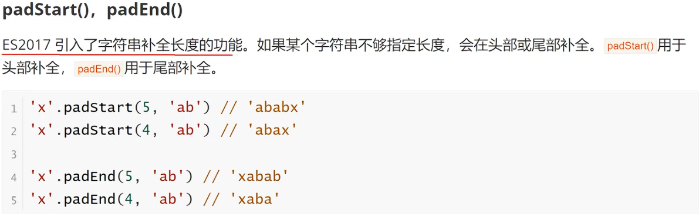

includes() 包含 【返回布尔值，表示是否找到了参数字符串】
startsWith() 以...开头 【返回布尔值，表示参数字符串是否在源字符串的头部
endsWith() 以...结尾 【返回布尔值，表示参数字符串是否在源字符串的尾部
let s = 'hello world'; console.log(s.includes('world')) // true console.log(s.startsWith('h')) // true console.log(s.endsWith('d')) // true 这三个方法都支持第二个参数，表示开始搜索的位置
let s = 'hello world'; console.log(s.includes('world', 5)) // true console.log(s.startsWith('h', 1)) // false console.log(s.endsWith('d', 10)) // false repeat() 方法返回一个新字符串，表示将源字符串重复N次
var x = "qwe" console.log(x.repeat(3)) console.log(x.repeat(0)) // 空字符串
padStart(), padEnd()
trimStart(), trimEnd() 消除字符串首尾空格-返回新字符串，不修改源字符串
var x = " hello world " console.log(x.trimStart()) console.log(x.trimEnd())
at() 方法接受一个整数作为参数，返回参数指定位置的字符串，支持负索引（即倒数的位置）
var s = 'hello world' console.log(s.at(0)) // 'h' console.log(s.at(-1)) // 'd'